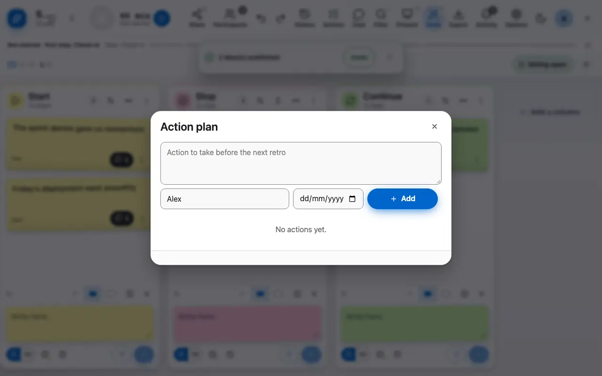
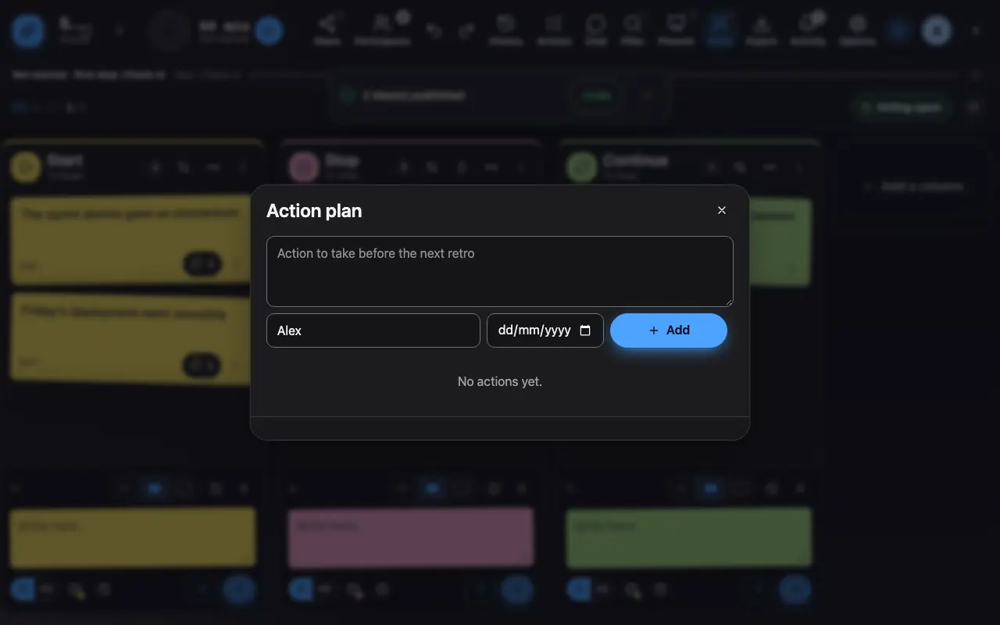

The action plan
The decisions of the retro become actions with an owner.
1 Add an action, give it an owner and a due date.
The decisions of the retro become actions: a text, an owner and a due date. An action can come from an idea on the board, and the open actions of one retro can be carried over to the next.

